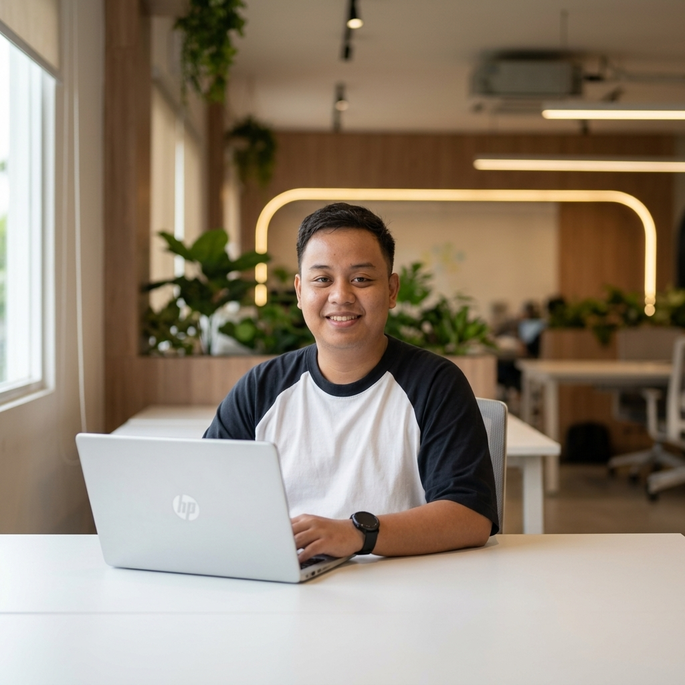
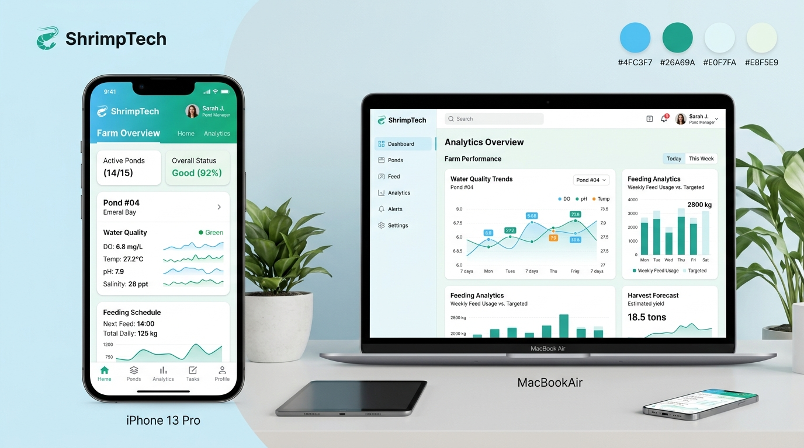
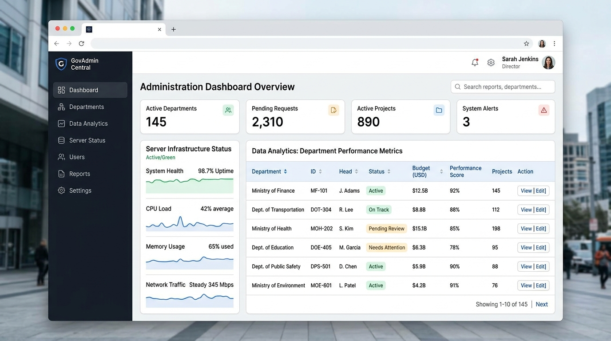

Senior Full-Stack Developer
Spesialis Laravel & Flutter
Halo! Saya Mochamad Aziz Noviyanto, lulusan S1 Sistem Informasi dengan 7+ tahun pengalaman membangun arsitektur backend tangguh berbasis Laravel & CodeIgniter, penulisan optimasi query database kompleks, serta aplikasi mobile modern dengan Flutter.

Mochamad Aziz Noviyanto
S1 Sistem Informasi (UPN 'Veteran' Jatim)
Laravel & CodeIgniter
Arsitektur Backend Skala Enterprise
Flutter & Mobile App
Android & iOS dari nol terintegrasi API
Raw Query Optimizer
MySQL, MariaDB, SQL Server
7+ Tahun
Pengalaman Nyata
Bukan sekadar teori, teruji di sistem instansi & swasta
Repeat Order
Kepercayaan Klien
Klien puas & mempercayakan ekspansi aplikasi mobile
Full-Stack
End-to-End Delivery
Analisis ➔ Database ➔ API ➔ Mobile ➔ Server VPS
Disiplin
Manajemen Waktu
Terbiasa sistem tiket (Jira/Trello), transparan & on-time
Mengapa Memilih Saya untuk Proyek Freelance Anda?
Mencari developer freelance yang tidak hanya bisa menulis kode, tetapi juga paham analisis kebutuhan bisnis, arsitektur database, dan deployment server mandiri.
Bekerja Mandiri & Solutif
Anda tidak perlu repot melakukan supervisi teknis mikro. Dari tahap perancangan database, penulisan API, hingga deployment server, saya terbiasa mengeksekusi proyek secara mandiri dan bertanggung jawab penuh.
Optimasi Database & Performa
Aplikasi Anda mulai lambat karena query yang menumpuk? Saya memiliki spesialisasi dalam meracik complex raw query dan indexing database (MySQL/MariaDB/SQL Server) agar aplikasi kembali melesat cepat.
Jam Malam Fokus & Terjadwal
Dengan jadwal kerja freelance resmi (18:00 – 22:00 WIB, Senin – Minggu), waktu pengerjaan proyek Anda teralokasi khusus tanpa bentrok dengan kesibukan siang, didukung komunikasi yang responsif.
Layanan Freelance yang Siap Saya Kerjakan
Pilih kebutuhan sistem Anda. Saya siap membantu dari awal perancangan hingga aplikasi siap digunakan oleh pengguna.
Backend & RESTful API (Laravel)
Pembangunan arsitektur backend yang aman, terstruktur, dan scalable menggunakan framework Laravel / CodeIgniter / Java Spring Boot untuk melayani jutaan request data.
Aplikasi Mobile Flutter (Android & iOS)
Pengembangan aplikasi mobile dari nol dengan Flutter. Tampilan modern, responsif, dan terintegrasi mulus dengan backend API sistem Anda.
Optimasi Query & Troubleshooting Database
Mendiagnosis dan memperbaiki bottleneck database yang membuat sistem lambat. Penulisan raw query kompleks, perbaikan indexing, dan struktur relasi database.
Setup Server VPS & Multi-Version PHP
Konfigurasi server produksi Linux (Ubuntu/Debian), Nginx web server, SSL, domain, dan setup multi-versi PHP dalam 1 server (misal: CI2 PHP 5.6 + Laravel PHP 8.2).
Maintenance & Upgrade Fitur Legacy
Melanjutkan proyek yang terhenti, memperbaiki bug sistem yang ada, memperbarui fitur baru pada aplikasi lama berbasis CodeIgniter 2/4 atau Angular.
Integrasi Sistem & Pihak Ketiga (3rd Party)
Menghubungkan aplikasi web/mobile Anda dengan Payment Gateway (Midtrans/Xendit), WhatsApp Gateway, SMS OTP, atau API pihak ketiga lainnya.
Proyek Pilihan & Studi Kasus
Berikut adalah beberapa proyek nyata yang telah saya bangun, mencakup sistem manajemen skala instansi hingga aplikasi mobile terintegrasi.

Sistem Manajemen Tambak Udang & Mobile App Monitoring
Menyelesaikan maintenance sistem web manajemen tambak berbasis CodeIgniter tepat waktu. Karena kepuasan hasil kerja, klien memberikan repeat order untuk merancang & membangun aplikasi mobile baru dari nol menggunakan Flutter yang diintegrasikan dengan backend Laravel REST API.

Arsitektur Backend & Optimasi Query Sistem Operasional
Dipercaya penuh merancang arsitektur backend Laravel untuk kebutuhan operasional birokrasi, optimasi raw query data kompleks tanpa supervisi ketat, perbaikan UI/UX menu kantor, serta sukses mengkonfigurasi server produksi multi-versi PHP (CI 2 legacy + Laravel baru) tanpa konflik.
Backend Microservice & API Component (Java Spring Boot)
Berkontribusi dalam pengembangan arsitektur dan komponen backend menggunakan Java Spring Boot. Bekerja remote terstruktur berbasis sistem tiketing Agile (Jira/Trello), code review ketat, dan integrasi API antartim secara transparan.
Enterprise Business Platform & Modul Android Operasional
Mengembangkan fitur aplikasi internal menggunakan framework Angular, merancang query database skala besar berkala untuk penyusunan laporan operasional bisnis, serta menjaga stabilitas modul berbasis Android agar bebas crash.
Keahlian Teknis & Tech Stack
Keahlian praktis yang telah diasah selama lebih dari 7 tahun dalam menangani aplikasi berskala kecil hingga enterprise.
Backend & Framework
Core Expertise
- Laravel Expert
- PHP (5.6, 7.x, 8.x) Expert
- CodeIgniter (CI 2, CI 4) Expert
- Java (Spring Boot) Proficient
- RESTful API Design Advanced
Mobile & Frontend
Cross-Platform
- Flutter Advanced
- Dart Language Advanced
- Angular Framework Experienced
- Tailwind CSS / HTML5 Proficient
- Android SDK / Java Experienced
Database Management
Performance Tuning
- MySQL & MariaDB Expert
- Complex Raw Query Spesialis
- SQL Server Proficient
- Index & Query Profiling Optimized
- Database Schema Design Expert
Server & Workflow
DevOps & Tools
- Nginx & Multi-PHP Expert
- VPS Linux Management Advanced
- Laragon Environment Proficient
- Git Version Control Advanced
- Jira / Trello / Tiket Agile Ready
Pengalaman Kerja & Karir Profesional
Perjalanan dedikasi selama lebih dari 7 tahun dalam dunia software development.
Full-Stack Developer – Pemerintah Provinsi Jawa Timur
Full-Time (On-site)Surabaya, Jawa Timur
- • Dipercaya penuh dalam merancang, membangun, dan memelihara arsitektur backend aplikasi berbasis Laravel untuk kebutuhan operasional pemerintahan.
- • Secara mandiri mengolah dan menyajikan data melalui optimasi raw query database kompleks sesuai kebutuhan pihak manajemen tanpa perlu supervisi teknis yang ketat.
- • Melakukan inisiatif optimasi UI/UX serta efisiensi menu sistem internal kantor, berhasil meningkatkan produktivitas dan kecepatan kerja pengguna.
- • Melakukan konfigurasi dan pemeliharaan server produksi agar dapat menjalankan multi-versi PHP secara bersamaan (mengakomodasi sistem legacy CI 2 dan sistem baru berbasis Laravel) tanpa bentrok.
Remote Full-Stack Developer – Freelance Project (PT. Nagrofaqua)
Part-Time / Project-Based (Repeat Client)- • Bertanggung jawab atas maintenance dan pengembangan fitur pada aplikasi manajemen tambak udang berbasis CodeIgniter hingga selesai tepat waktu di awal tahun 2025.
- • Mendapatkan kepercayaan kembali dari klien (repeat order) karena kepuasan hasil kerja, untuk memperluas sistem ke versi aplikasi mobile.
- • Merancang dan membangun aplikasi mobile dari nol menggunakan Flutter, yang diintegrasikan dengan backend berbasis Laravel REST API.
Remote Back-End Developer – Project Collaboration
Remote Team Collaboration- • Berkontribusi dalam pengembangan arsitektur dan komponen backend menggunakan framework Java Spring Boot.
- • Beradaptasi secara cepat dengan manajemen proyek modern berbasis Sistem Tiketing untuk penyelesaian task yang terstruktur dan transparan.
- • Berhasil menyelaraskan alur pengerjaan teknis dalam lingkungan kerja remote berskala tim terorganisir.
Web & Android Programmer – PT. Primavisi Globalindo
Full-Time (4 Tahun)- • Mengembangkan dan melakukan pemeliharaan (maintenance) fitur serta menu baru pada aplikasi internal menggunakan framework Angular.
- • Merancang penulisan query database secara berkala untuk kebutuhan penyusunan laporan operasional dan penajaman performa menu baru.
- • Memastikan stabilitas jalannya aplikasi web dan modul berbasis Android agar sesuai dengan kebutuhan klien perusahaan.
Strata 1 (S1) Sistem Informasi
Lulus 2018UPN "Veteran" Jawa Timur (Studi 4 Tahun Tepat Waktu)
Menyelesaikan proyek tugas akhir pembuatan aplikasi bekerja sama dengan Dinas Komunikasi dan Informatika Provinsi Jawa Timur dalam waktu 1 bulan kerja.
Informasi Ketersediaan Kerja (Availability)
Saya menyediakan slot pengerjaan proyek freelance dengan jam kerja terfokus yang terjadwal rutin setiap hari. Cocok untuk Anda yang membutuhkan developer komitmen tinggi tanpa resiko proyek ditinggalkan di tengah jalan.
Waktu Kerja Terjadwal
Senin – Minggu
Pukul 18.00 – 22.00 WIB (4 jam / hari)
Mode Pengerjaan
100% Remote (WFH)
Workstation prima, koneksi stabil & daily update
Punya Proyek yang Siap Dikerjakan?
Diskusikan sekarang dan dapatkan estimasi teknis serta timeline pengerjaan yang realistis.
Hubungi via WhatsAppMulai Diskusi Kebutuhan Sistem Anda
Isi form cepat di bawah ini untuk langsung membuka obrolan WhatsApp dengan format pesan yang telah tersusun rapi.
Kontak Langsung
Nomor Alternatif
0878-5668-4550
Email Resmi
nuv.noviyanto@gmail.com
LinkedIn Profile
linkedin.com/in/aziz-noviyanto
Jaminan Kualitas Freelance:
Semua kode ditulis dengan standar rapi, didokumentasikan, dan siap diserahterimakan kepada tim internal Anda berikut panduan deployment.
Kirim Brief Proyek ke WhatsApp
Formulir ini akan otomatis merangkai pesan WhatsApp yang siap Anda kirimkan.